Module 06 — Le service DNS¶
La transcription du support Drive et l’aide pédagogique sont séparées pour rendre leur provenance explicite.
SOURCE DRIVE · TRANSCRIPTION DU SUPPORT
Le contenu des documents du dossier TSSR est transcrit ci-dessous, page par page. Les textes et tableaux sont intégrés à la page Web. Aucun fichier PDF, aucune diapositive entière ni aucune reproduction de page n’est affiché. Seuls des croquis ou visuels isolés et vérifiés peuvent accompagner la transcription. Les versions et les consignes restent celles des supports de formation. Les compléments IA sont conservés dans leur onglet distinct.
Support · Module 06 – Support de cours · 21 pages transcrites
Module 06 – Le service DNS
Objectifs
- Comprendre et configurer le rôle DNS
La résolution de noms
La machine et l’humain, les chiffres ou les lettres
Quand nous sollicitons un service ou une ressource, nous indiquons :
- Le service sollicité
- Le nom de la machine qui fournit le service
http://www.google.com
172.18.0.0/16
\\SRVFIC01\Partage
SRVFIC01
La résolution de noms
La résolution de noms d’hôtes
Afin de résoudre les noms d’hôtes en adresses IP, plusieurs mécanismes peuvent être utilisés.
Mécanismes Utilité
Il contient des correspondances entre des noms d’hôtes déjà résolus et les adresses IP correspondantes. Il conserve aussi les réponses négatives aux requêtes du client. Il se gère avec la commande ipconfig.
Le service DNS Les clients DNS interrogent leur(s) serveur(s) DNS pour leurs requêtes de résolution.
Les modifications effectuées dans ce fichier (ajout et suppression d’entrées) sont reportées dans le cache DNS dès l’enregistrement du fichier.
| Mécanisme | Utilité |
|---|---|
| Cache DNS | Correspondances déjà résolues et réponses négatives. Il se gère avec ipconfig. |
| Service DNS | Les clients interrogent les serveurs DNS configurés. |
| Fichier hosts | Les modifications effectuées dans ce fichier sont reportées dans le cache DNS dès son enregistrement. |
La résolution de noms
Structure du fichier hosts
- Le fichier de configuration local C:\Windows\System32\drivers\etc\hosts permet de renseigner des correspondances entre des noms et les adresses IP correspondantes.
- La syntaxe de ce fichier est la suivante :
Adresse_IP Nom
172.16.255.254 rtsiege.monentreprise.local
172.17.0.0 srv01,srv01.monentreprise.local
Les informations contenues dans le fichier hosts sont prioritaires à l’interrogation du service DNS, s’il trouve une correspondance pour un nom donné dans ce fichier, le poste n’ira pas requêter le service DNS configuré.
Qu’est-ce que DNS ?
- Domain Name System est un service de résolution de noms.
Un service pour un espace
de noms en
Il permet de
nom de
résoudre
serveur l’hébergeant
Un nom en
Une adresse
adresse IP
IP en nom
Il est défini par des RFCs.
L’espace de
Ses principales caractéristiques
nom qu’il couvre est hiérarchique
La gestion de son espace de
Il est le mécanisme de
résolutions de
nom est distribuée
noms d’Internet
Noms d’hôtes et de domaine
Les noms d’hôtes
- DNS permet la résolution de noms d’hôtes pleinement qualifiés (ou FQDN pour Fully Qualified Domain Name) en adresse IP.
- Voici un exemple :
Séparateur hôte / domaine
Nom de domaine pleinement qualifié (FQDN) www . google.fr.
- La première partie du nom identifie le poste au sein de son espace de nom, on parlera de partie hôte du nom.
- La deuxième partie identifie l’espace de nom auquel appartient l’hôte, on parlera de la partie domaine du nom.
Noms d’hôtes et de domaine
Les noms de domaines
- Qu’est-ce que le domaine DNS ?
- C’est la partie commune à plusieurs hôtes d’un espace de noms.
- Pour être résolvable, tout hôte doit être identifiable par d’autre(s) poste(s) appartenant à d’autres espaces de noms. Pour cela, il dispose d’un nom pleinement qualifié unique à l’échelle mondiale.
- Il y a deux manières d’utiliser les espaces de noms :
- Usage privé : pour un espace de nom interne uniquement.
- Usage public : référencé sur Internet.
La hiérarchisation des espaces de noms
- L’espace de noms DNS est hiérarchique.
- Chaque espace de nom respecte cette hiérarchisation.
La racine Domaine
racine
.fr .com .de .net
Les TLD (Top Level Domain) (1er niveau)
Domaines de niveau
.gouv
inférieur (2e niveau)
éducation défense
(3e niveau)
La hiérarchisation des espaces de noms
Un serveur DNS comment ? Pour faire quoi ?
- Fournir des correspondances entre noms d’hôtes et adresse(s) IP associée(s).
- La résolution de noms externes à l’entreprise nécessite un serveur DNS résolveur.
- La mise en place d’un service de nommage interne (AD par exemple) nécessite un serveur DNS hébergeur.
- Le résolveur et l’hébergeur peuvent être assurés sur deux serveurs distincts ou cumulés sur le même serveur.
- En premier lieu, il faut identifier les besoins de résolutions de noms.
Le rôle du DNS résolveur
- C’est le partenaire désigné des équipements clients du service de résolution de noms.
- Il effectue des requêtes auprès d’autres serveurs DNS afin de résoudre les requêtes de ses clients.
- Il ne gère pas d’espace de noms.
Les mécanismes d’interrogation
Mécanismes d’interrogation des serveurs DNS
Deux types de requêtes peuvent être adressés à un serveur DNS :
- Les requêtes récursives :
- Le serveur répondant doit fournir une réponse complète à la question posée.
Ce type de requête est fréquemment utilisé par un client pour son serveur DNS.
- Les requêtes itératives :
- Le serveur qui envoie la requête accepte une réponse partielle à la question posée.
- La réponse sera une indication lui permettant d’avancer dans son processus de résolution.
Ce type de requête est fréquemment utilisé lors de l’exploration de l’arborescence DNS à partir de la racine
Les mécanismes d’interrogation
Les requêtes récursives
Quelle est l’adresse IP de www.google.com. ?
IP de www.google.com. = 172.217.18.196
DNS
Les mécanismes d’interrogation
Les requêtes itératives
.
Quelle est l’adresse IP
fr.
de www.amendes.gouv.fr. ?
A de www.amendes.gouv.fr. = 160.92.178.39
gouv.fr.
amendes.gouv.fr.
Les redirections
La redirection non conditionnelle
- Sans configuration particulière, un serveur DNS ira interroger les serveurs racine afin de résoudre les requêtes de ses clients.
- Si un serveur est configuré de telle sorte à utiliser la redirection, il demandera à son serveur redirecteur de trouver les réponses aux requêtes de ses clients.
Résolveur interne
Quelle est l’adresse IP de www.google.com. ?
Réseau interne DNS FAI
IP de www.google.com. = 172.217.18.196
Les redirections
Le redirecteur conditionnel
- Un serveur DNS peut être configuré pour faire appel à des redirecteurs ciblés pour des espaces de noms identifiés. Il s’agit de redirecteurs conditionnels.
- Cette configuration permet de :
- Résoudre des espaces de noms privés non référencés et non résolvables dans l’arborescence d’espaces de noms publics.
- D’optimiser la résolution d’espaces de noms qui sont souvent sollicités.
Serveur faisant autorité pour enigme.lcl.
Redirection conditionnelle
Pour le domaine enigme.lcl.
Zone enigme.lcl.
Résolveur interne
Les redirections
La mise en cache
- Chaque fois qu’un serveur DNS fait appel à d’autres serveurs pour ses demandes de résolutions, il enregistre dans le cache DNS les résultats obtenus.
- La durée de conservation en cache est propre à chaque enregistrement (TTL).
- Les réponses négatives (enregistrement inexistant par exemple) sont aussi conservées en cache.
- Lorsque le serveur reçoit une requête d’un client, il détermine si cette dernière est relative à une zone pour laquelle il fait autorité. Si ce n’est pas le cas, il consulte son cache.
Le serveur et le client disposent de caches différents.
Démonstration
DNS résolveur
TP
Le DNS hébergeur
Le rôle du DNS hébergeur
Il a pour mission de
répondre aux requêtes relatives à
l’espace de nom
qu’il gère
Le DNS hébergeur
Il fait autorité pour
le ou les espace(s)
de nom(s) qu’il
Il gère un ou plusieurs espaces
gère
de noms
Les zones
- Correspondent au conteneur de l’ensemble des données d’un espace de nom.
- Elle contient un ensemble d’enregistrements.
- Le contenu de chaque zone est stocké dans un fichier de zone qui lui est propre (habituellement stocké dans %windir%\system32\dns*).
Les zones
Zone directe
- À chaque espace de nom correspond une zone.
- Un serveur faisant autorité est en mesure de répondre directement aux requêtes concernant l’espace de noms correspondant.
- S’il fait autorité sur une zone directe, il peut résoudre un nom en adresse IP.
Résolveur interne
Quelle est l’adresse IP de srvfic.masociete.lcl. ?
Héberge la zone masociete.lcl.
Réseau interne
IP de srvfic.masociete.lcl. = 192.168.0.1
Les zones
Zone inverse
S’il fait autorité sur une zone inverse, il peut résoudre une adresse IP en nom.
Résolveur interne
Héberge la zone inverse pour le réseau 192.168.0.0 Quel est le nom de 192.168.0.1 ?
Réseau interne
Nom de 192.168.0.1 = srvfic.masociete.lcl.
Les zones
Zone principale et zone secondaire
Les zones
Le contenu d’une zone
- Une zone contient un ensemble d’enregistrements.
- Dans une zone directe ou inverse, il y a :
- Un SOA : (Start Of Authority) nom FQDN du serveur DNS disposant de la zone en écriture.
- Un ou des NS : (Name Server) serveur(s) faisant autorité pour la zone.
| Serveur maître | Serveur esclave | |
|---|---|---|
| Type de zone hébergée | Zone principale | Zone secondaire |
| Autorisation d’accès | Lecture / écriture | Lecture |
| Fait autorité pour la zone | Oui | Oui |
Les zones
Le contenu d’une zone
- Les enregistrements présents dans des zones directes
Type d’enregistrement Contenu
SOA nom FQDN du serveur DNS disposant de la zone en écriture
NS serveur(s) faisant autorité pour la zone
Les zones
Le contenu d’une zone
- Les enregistrements présents dans des zones inverses
Type d’enregistrement Contenu
SOA nom FQDN du serveur DNS disposant de la zone en écriture
NS serveur(s) faisant autorité pour la zone
| Enregistrements de zone directe | Contenu |
|---|---|
| SOA | Nom FQDN du serveur disposant de la zone en écriture |
| NS | Serveur(s) faisant autorité |
| A | Hôte IPv4 |
| AAAA | Hôte IPv6 |
| CNAME | Alias |
| MX | Serveur de messagerie |
| SRV | Services |
| Enregistrements de zone inverse | Contenu |
|---|---|
| SOA | Nom FQDN du serveur disposant de la zone en écriture |
| NS | Serveur(s) faisant autorité |
| PTR | Pointeur |
Les zones
Récapitulatif des étapes de résolution
Demande de résolution du client pour www.hadopi.fr.
Le serveur cherche la réponse dans sa zone et répond au client
Oui
Le serveur interrogé fait-il autorité pour la zone hadopi.fr.
?
Non
Le serveur répond au client
Oui
réponse en cache ?
Non
Le serveur interroge le redirecteur configuré
Oui
Le serveur est-il configuré pour
1 – redirecteur conditionnel 2 – redirecteur non-conditionnel
faire appel aux redirecteurs ?
Non
Le serveur interroge un serveur racine
Le serveur interroge les racines
Oui
Le serveur a-t-il obtenu la réponse à la requête de son
Le serveur interroge un serveur indiqué par
client ?
Non
la réponse à la précédente requête
Démonstration
DNS hébergeur
TP
Les mises à jour
Les enregistrements dynamiques
Dans une zone sont inscrites des correspondances entre des noms et des adresses IP.
- Parfois, ces enregistrements doivent être maintenus statiquement.
mail1
www
edition-exemple.test. www = 2001:0DB8:1234::1 mail1 = 2001:0DB8:1234::5
- Dans d’autres cas, pour une zone principale, l’enregistrement dynamique sera autorisé.
Cli-1
Cli-2
Réseau interne Zone mondomaine.lcl. Cli-1 = 192.168.0.20 Cli-2 = 192.168.0.21
Les mises à jour
Le transfert de zone
Le transfert de zone est le processus d’échanges de données d’une zone entre un serveur maître et un serveur esclave.
DNS maitre DNS esclave
1-Le serveur DNS esclave interroge le maître pour obtenir le numéro de version de la zone
Zone mondomaine.lcl. @ IN SOA […] @ IN A 192[…]
2-Le serveur DNS maître fournit en retour le numéro de version de la zone
Zone mondomaine.lcl. Serial 120 Cli-1 = 192.168.0.20 Cli-2 = 192.168.0.21
Zone mondomaine.lcl. Serial 123 Cli-1 = 192.168.0.20 Cli-2 = 192.168.0.21 Cli-3 = 192.168.0.22
3-Si le numéro de version reçu est supérieur au numéro de version connu, le serveur esclave initie alors une requête IXFR (incrémentale) ou AXFR (complet)
Requête IXFR ou AXFR pour mon domaine.lcl.
SOA de mondomaine.lcl.
SOA de mondomaine.lcl. […] Serial 123
4-Si le transfert de zone est autorisé vers celui qui lui a adressé la requête, le serveur DNS maître répond alors en fournissant les mises à jour de la zone ou toute celle-ci
Les mises à jour
Le transfert de zone
- C’est au serveur esclave d’aller interroger son serveur maître afin d’obtenir les mises à jour.
- Néanmoins, le serveur maître a la possibilité de prévenir le ou les serveur(s) esclave(s).
- Quand une modification est effectuée dans sa zone, le numéro de série de celle-ci est incrémenté et le serveur maître émet une requête DNS de type Notify à destination des serveurs esclaves.
- Suite à la réception de cette requête, le serveur esclave initiera le processus de transfert de zone précédemment décrit.
Le service DNS
Les mises à jour
Le transfert de zone
Le transfert de zone est le processus d’échanges de données d’une zone entre un
serveur maître et un serveur esclave.
1- Le serveur DNS esclave interroge le maître pour obtenir le
DNS maitre DNS esclave numéro de version de la zone Zone mondomaine.lcl.
@ IN SOA […]
2- Le serveur DNS maître fournit en retour le numéro de Zone mondomaine.lcl.@ IN A 192[…] Zone mondomaine.lcl.
version de la zone Serial 123 Serial 120
Cli-1 = 192.168.0.20 Cli-1 = 192.168.0.20
Cli-2 = 192.168.0.21 Cli-2 = 192.168.0.21
3- Si le numéro de version reçu est supérieur au numéro de Cli-3 = 192.168.0.22
version connu, le serveur esclave initie alors une requête IXFR
(incrémentale) ou AXFR (complet) Requête IXFR ou AXFR pour mon domaine.lcl.
Si le transfert de zone est autorisé vers celui qui lui a 4-
SOASOAdedemondomaine.lcl.mondomaine.lcl.[…] adressé la requête, le serveur DNS maître répond alors en
fournissant les mises à jour de la zone ou toute celle-ci Serial 123
33
33
Le service DNS
Les mises à jour
Le transfert de zone
• C’est au serveur esclave d’aller interroger son serveur maître afin d’obtenir les mises
à jour.
• Néanmoins, le serveur maître a la possibilité de prévenir le ou les serveur(s)
esclave(s).
• Quand une modification est effectuée dans sa zone, le numéro de série de celle-ci
est incrémenté et le serveur maître émet une requête DNS de type Notify à
destination des serveurs esclaves.
• Suite à la réception de cette requête, le serveur esclave initiera le processus de
transfert de zone précédemment décrit.
34
34Démonstration
DNS hébergeur et redondance
TP
Les sous-domaines
Ils permettent d’organiser un espace de noms en regroupant des enregistrements par leur appartenance à une même entité (site, service).
Fait autorité pour mondomaine.lcl.
Fait autorité pour mondomaine.lcl. Et pour les espaces de noms enfants
Zone mondomaine.lcl.
Zone mondomaine.lcl.
Srv1.nantes = 10.0.0.1 Cli1.nantes = 10.0.20.1
Nantes-Srv1 = 10.0.0.1 Nantes-Cli1 = 10.0.20.1 Brest-Srv1 = 10.1.0.1 Brest-Cli1 = 10.1.20.1 Rennes-Srv1 = 10.2.0.1 Rennes-Cli1 = 10.2.20.1
Srv1.brest = 10.1.0.1 Cli1.brest = 10.1.20.1
Srv1.rennes=10.2.0.1 Cli1.rennes = 10.2.20.1
Sous-domaines intégrés
dans la zone
Les sous-domaines
Les délégations La gestion des espaces de noms enfants peut être assurée par d’autre(s) serveur(s) DNS si une délégation de zone est faite.
Zone mondomaine.lcl.
Fait autorité pour mondomaine.lcl. Mais ne fait pas autorité pour les espaces enfants Nantes, Brest et Rennes Délégations pour nantes brest rennes
Zone rennes.mondomaine.lcl.
Zone nantes.mondomaine.lcl.
Zone brest.mondomaine.lcl. Srv1 = 10.35.0.1 Cli1 = 10.35.20.1
Srv1 = 10.44.0.1 Cli1 = 10.44.20.1
Srv1 = 10.29.0.1 Cli1 = 10.29.20.1
Démonstration
DNS délégations et redirections
TP
Conclusion
- Vous comprenez et savez configurer le rôle DNS
Référence du document : 15wPmzaKhPIC2AxqYSJ1xp2rVRMAxdaLf · SHA-256 a33356182e938793…
Démonstration · Fiche démo 1 - La configuration du service DNS · 5 pages transcrites
La configuration du service DNS
Démonstration 01 du module 06
Cette démonstration décrit les différentes étapes relatives à l’installation du service DNS sur une machine virtuelle Windows.
Déroulement
- Prérequis
Avoir installé et configuré une VM Windows Server.
- Accès à la console d’installation.
Lors de l’accès à la session du serveur, le Gestionnaire de Serveur ou Serveur Manager se lance automatiquement.
Pour lancer la console permettant l’ajout d’un rôle, cliquer sur Manage ou Gérer (1) puis sur Add Roles and Features ou Ajout de Rôles et Fonctionnalités (2).
- Choix du rôle à installer.
Cliquer sur le bouton Suivant (1), puis encore une fois sur le bouton Suivant (2). Sur l’écran, Sélectionner le serveur de destination, cliquer sur le bouton Suivant (3). Sur l’écran Sélectionner des rôles de serveurs, cocher la case Serveur DNS (4). Sur la fenêtre contextuelle qui vient d’apparaître, cliquer sur le bouton Ajouter des fonctionnalités (5), puis sur le bouton Suivant (7). Sur l’écran Sélectionner des fonctionnalités, cliquer sur le bouton Suivant (8). Sur l’écran Serveur DNS, cliquer sur le bouton Suivant (9). Continuer jusqu’à la finalisation du rôle.

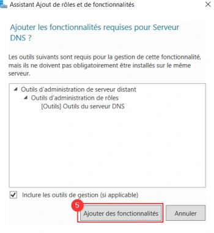
- Ajout du raccourci dans la barre des tâches
Ouvrir Outils d’administration, puis création du raccourci DHCP (1) dans la barre des taches (2).
- Présentation de la console
Cliquer sur le raccourci précédemment créé afin d’ouvrir la console DNS.
Zone de recherche directe (1) : processus de recherche d'une adresse IP basée sur le nom d'hôte dans DNS.
Zone de recherche inversée (2) : processus de recherche de nom d’hôte basé sur l’adresse IP dans le système DNS.
Redirecteurs conditionnels (3) : le serveur DNS peut être configuré pour faire appel à des redirecteurs ciblés pour des espaces de noms identifiés. Résoudre des espaces de noms privés non référencés et non résolvables dans l’arborescence d’espaces de noms publics. D’optimiser la résolution d’espaces de noms qui sont souvent sollicités.
DNS (4) et Redirecteurs (5) : si le serveur est configuré de telle sorte à utiliser la redirection, il demandera à son serveur redirecteur de trouver les réponses aux requêtes de ses clients.
Étapes illustrées dans le support
- Dans Gestionnaire DNS, développer le nœud DNS puis le serveur.
- Repérer Zones de recherche directes, Zones de recherche inverse, Points d’approbation et Redirecteurs conditionnels. La vue du serveur présente également les indications de racine et les redirecteurs.
Référence du document : 1N-sN7cnYWR7yvZmxoK_vjcPG3jzxL-p6 · SHA-256 913c358d2761dde8…
Démonstration · Fiche démo 2 - La configuration d’un serveur DNS hébergeur · 4 pages transcrites
La configuration d’un serveur DNS hébergeur
Démonstration 02 du module 06
Cette démonstration décrit les différentes étapes relatives à l’installation d’un serveur DNS hébergeur sur une machine virtuelle Windows.
Déroulement
- Ouvrir la console MMC du service DNS.
Ouvrir la fenêtre Outils d’administration puis cliquer sur la ligne DNS (1).
- Création d’une zone directe
Faire un clic droit sur la ligne Zones de recherche directes (1) puis sur le menu Nouvelle zone… (2). Cocher le bouton radio Zone principale (3), puis cliquer sur le bouton Suivant (4). Spécifier le nom de la zone (5), puis cliquer sur le bouton Suivant (6). Cliquer de nouveau sur le bouton Suivant (7). Laisser cocher la case qui n’autorise pas les enregistrements dynamiques (cela sera abordé dans une prochaine démonstration), cliquer directement sur le bouton Suivant (8). La zone est créée et apparaît (9). Cette dernière dispose bien d’un SOA et d’un NS.

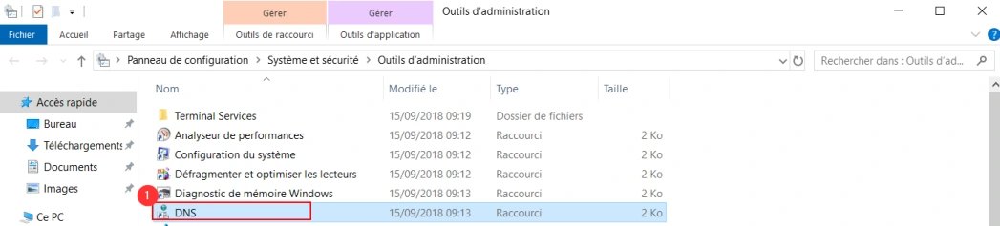

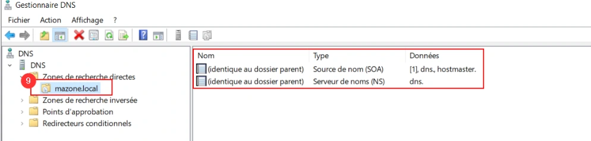
- Création d’une zone de recherche inversée
Cliquer droit sur la ligne Zones de recherche inversée (1) puis sur le menu Nouvelle zone (2). Cocher le bouton radio Zone principale (3), puis cliquer sur le bouton Suivant (4). Laisser cocher le bouton radio Zone de recherche inversée IPv4 (5), puis cliquer sur le bouton Suivant (6). Spécifier l’adresse réseau de la zone inverse (pour les besoins de la démonstration, le réseau est en 192.168.1.0/24) (7), puis cliquer sur le bouton Suivant (8). Tout comme l’étape d’avant, ne pas changer le nom du fichier de zone et ne pas autoriser les enregistrements dynamiques. La zone est désormais visible.

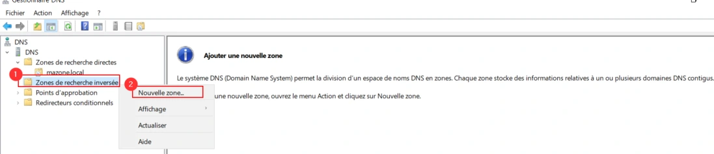
- Ajout d’enregistrement dans une zone
Se positionner dans la zone directe nouvellement créée. Dans le volet central, faire un clic droit, puis cliquer sur le menu Nouvel hôte (1). Indiquer le nom NetBIOS de l’hôte (2), le nom FQDN s’autocomplète (2), indiquer l’adresse IP associée à l’hôte (4) et si besoin laisser cocher la case Créer un pointeur d’enregistrement PTR associé, cela permettra d’avoir directement l’enregistrement de créé dans la zone inverse. Enfin, cliquer sur le bouton Ajouter un hôte (5).
- Vérification avec nslookup
Pour vérifier les éléments précédemment configurés, ouvrir l’invite de commande puis indiquer
nslookup suivi du nom de la zone directe.Enfin indiquer nslookup suivi du nom FQDN de l’hôte.Référence du document : 106ggN1NeWhtibgdwD6mdfGnPSwqd1HS1 · SHA-256 5ee1a7c02c57073a…
Démonstration · Fiche démo 3 - Le DNS et les mises à jour · 6 pages transcrites
Le DNS et les mises à jour
Démonstration 03 du module 06
Cette démonstration décrit les différentes étapes relatives à la configuration des mises à jour sur un serveur DNS
Déroulement
- Ouvrir la console MMC du service DNS.
Ouvrir la fenêtre Outils d’administration puis cliquer sur la ligne DNS (1).
- Mise en place de l’enregistrement automatique des hôtes
Lors de la configuration des zones dans la précédente démonstration, l’enregistrement automatique des hôtes n’a pas été activé.
Pour ce faire, faire droit sur la zone directe (2), puis cliquer sur le menu Propriétés (3). Sélectionner la ligne Non sécurisé et sécurisé (4). De base, dans le contexte de domaine Active Directory, les zones seront créées et les enregistrements d’hôtes seront automatiques.
- Une autre manière de forcer l’enregistrement d’un hôte.
Installer une VM cliente étant sur le même sous-réseau que le serveur DNS et avec comme serveur DNS préféré, le serveur DNS sur lequel vous travailler dans cette démonstration.
Ouvrir une invite de commande en tant qu’administrateur sur le poste et client et indiquer la
commande ipconfig /registerdns- Activer le transfert de zone
Installer une VM serveur étant sur le même sous-réseau que le serveur DNS. Installer le service DNS.
Sur le premier serveur DNS, faire un clic droit sur la zone directe (1), puis sur le menu Propriétés (2). Cliquer sur l’onglet Transferts de zone (3). Dans cette démonstration, le second serveur DNS sera utilisé. Cocher le bouton radio Uniquement vers les serveurs suivants (4). Cliquer sur le bouton Modifier (5). Indiquer l’adresse du second serveur DNS (6), puis cliquer sur le bouton OK (7).
- Configuration du transfert de zone sur le second serveur
Faire un clic droit sur la ligne Zones de recherche directes (1) puis sur le menu Nouvelle zone… (2). Cocher le bouton radio Zone secondaire (3), puis cliquer sur le bouton Suivant (4). Indiquer le nom de la zone que vous souhaitez « copier » (5), puis cliquer sur le bouton Suivant (6). Indiquer l’adresse IP (7) du serveur maître (ici le premier serveur DNS), puis cliquer sur le bouton Suivant (8).

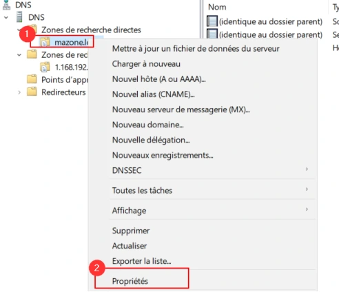
- Vérification du transfert de zone
Se positionner sur la nouvelle zone créée (1). L’ensemble des enregistrements doivent être présents (2). En cas d’ajout de nouveaux enregistrements, ces derniers seront automatiquement ajoutés sur cette zone secondaire.

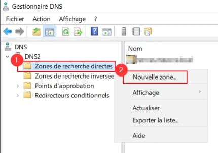
Attention, il n’est pas possible d’ajouter des enregistrements sur cette zone secondaire (lecture uniquement).
Référence du document : 1_MNES0GabYoPW15w4Qx4eiMntT51oqMM · SHA-256 6baeed86e5a42e85…
Démonstration · Fiche démo 4 - Le DNS les sous-domaines et les délégations · 3 pages transcrites
Le DNS, les sous-domaines et les délégations
Démonstration 04 du module 06
Cette démonstration décrit les différentes étapes relatives à la configuration d’un sous-domaine et la mise en place de délégation.
Déroulement
- Ouvrir la console MMC du service DNS.
Ouvrir la fenêtre Outils d’administration puis cliquer sur la ligne DNS (1).
- Création d’une zone principale sur le deuxième serveur DNS
Sur le second serveur DNS, créer une zone principale (ici rennes.mazone.local) (1).
Y ajouter des enregistrements d’hôtes à l’intérieur (2).

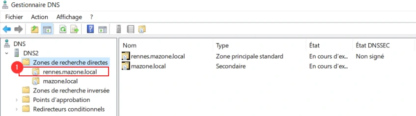
- Création de la délégation
Sur le premier serveur DNS, faire droit sur la zone précédemment créée (ici mazone.local) (1), puis sur le menu Nouvelle délégation… (2). Indiquer le nom du domaine délégué (ici Rennes, qui correspond à la zone créée sur le second serveur DNS) (3), puis cliquer sur le bouton Suivant (4). Indiquer l’adresse IP du second serveur DNS (5), puis cliquer sur le bouton Suivant (6). Ne pas oublier de faire des redirecteurs conditionnels afin de pouvoir résoudre correctement vos zones.

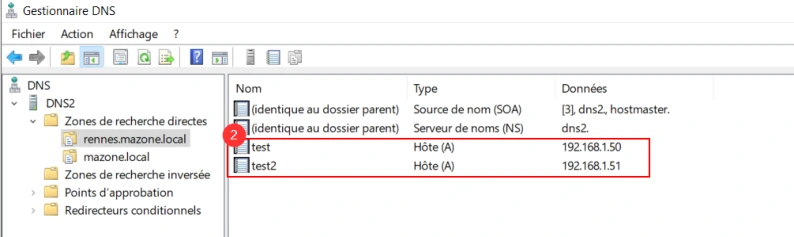
- Vérification
Avant la mise en place du redirecteur, il n’était pas possible de résoudre le sous-domaine rennes.mazone.local, c’est désormais possible.
Sur le premier serveur DNS, ouvrir une invite de commande et tester avec des commandes
nslookup
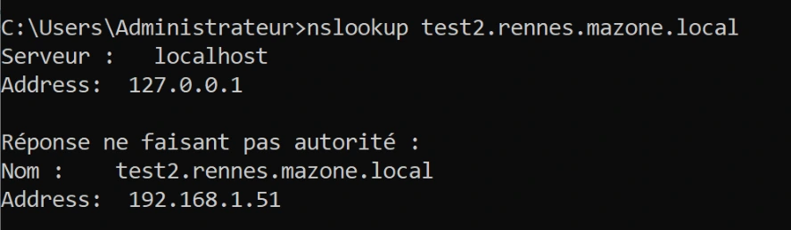
Référence du document : 166kmmVyH9fut3FVPTQPLCLEXYL8cPQXJ · SHA-256 c6a5549e7bcae9bb…
Énoncé · Enoncé du TP 1 - DNS résolveur · 2 pages transcrites
Services réseau en environnement Microsoft DNS résolveur
TP du Module 06 – Le service DNS
Avant de démarrer ce TP, il convient d’avoir suivi les vidéos du module 6.
Durée estimée
1 à 2 heures
Énoncé
Prérequis :
Avoir réalisé le TP précédent du Module 05.
Création de la machine virtuelle : Installer une nouvelle machine virtuelle sous Windows Server 2019 Standard.
- Cette dernière sera nommée W19-DNS.
Cette machine devra communiquer avec l’ensemble de votre infrastructure.
Installation du service DNS : Installer le service DNS sur W19-DNS
Configurer W19-DNS afin qu’elle fasse appel à son propre service DNS.
Tester la résolution depuis W19-DNS.
- Pouvez-vous résoudre les noms DNS publics ?
Oui Non
- Pouvez-vous résoudre les noms DNS de centre de formation École ? (ad.campus-formation.test)
Oui Non
Est-ce normal ?
Afficher les informations contenues dans le cache du service DNS
Vider le cache DNS du serveur.
Configurer les redirecteurs vers les serveurs DNS de l’centre de formation, dont est cliente votre machine physique.
- Pouvez-vous résoudre les noms DNS publics ?
Oui Non
- Pouvez-vous résoudre les noms DNS de centre de formation École ?
Oui Non
Afficher les informations contenues dans le cache du service DNS.
- Que pouvez-vous en déduire ?
Paramétrages clients
Configurer le serveur DHCP afin qu’il fasse appel au serveur DNS de votre infrastructure.
Configurer automatiquement les clients afin qu’ils fassent appel au serveur DNS de votre infrastructure.
- Pouvez-vous résoudre les noms DNS publics ?
Oui Non
- Pouvez-vous résoudre les noms DNS de centre de formation École ?
Oui Non
Référence du document : 17NjF3si6dTyLqzOpap5MZ87gaZ6hNAp8 · SHA-256 52d5d0074f914b27…
Énoncé · Enoncé du TP 2 - DNS hébergeur · 2 pages transcrites
Services réseau en environnement Microsoft DNS hébergeur
TP du Module 06 – Le service DNS
Avant de démarrer ce TP, il convient d’avoir suivi les vidéos du module 6 et d’avoir réalisé le précédent TP.
Durée estimée
1 à 2 heures
Énoncé
Prérequis :
Avoir réalisé le TP précédent du Module 05.
Mettre en place la VM SRV-2K19-DNS-TP14.ova mise à disposition.
Identifiant : Administrator - Mot de passe : [valeur fournie par le formateur]
Configuration du serveur DNS hébergeur
Installez le service DNS sur la machine virtuelle ou le service DHCP est hébergé.
Sur ce serveur, créez les zones pour les besoins suivants :
- Résolution directe pour un domaine infraXX.net (ou XX = vos initiales).
- Résolution inverse pour votre réseau VmNet10.
- Création de l’ensemble des enregistrements permettant la résolution des noms et adresses IP de vos serveurs.
Testez et validez le bon fonctionnement depuis votre serveur :
- nslookup -q=soa <votre domaine>
- nslookup -q=ns <votre domaine>
Paramétrage du client
Revoir la configuration automatique des paramètres DNS sur les clients :
- Configurez le 2e serveur DNS comme serveur DNS préféré. o Configurez le suffixe DNS relatif à votre domaine.
Testez et validez le bon fonctionnement de la résolution de vos domaines depuis le poste client.
- En utilisant le FQDN o En utilisant le nom d’hôte uniquement
Chaîne de résolution :
Configurez le 2e serveur DNS pour faire appel uniquement à votre 1er serveur DNS pour la résolution des noms DNS extérieurs.
Configurez votre 2e serveur DNS pour permettre la résolution du domaine DNS mis à disposition «infraXX.net » .
Testez et validez le bon fonctionnement de la résolution depuis le client.
- Vers vos domaines DNS ?
Oui Non
- Vers les domaines DNS fournis ?
Oui Non
- Vers les domaines DNS publics ?
Oui Non
Référence du document : 1zsTogw-3-KIyqlbywqVOhe-tdG1zbXfV · SHA-256 21b8123e765b1781…
Énoncé · Enoncé du TP 3 - DNS hébergeur et redondance · 3 pages transcrites
Services réseau en environnement Microsoft DNS hébergeur et redondance
TP du Module 06 – Le service DNS
Avant de démarrer ce TP, il convient d’avoir suivi les vidéos du module 6 et réalisé le précédent TP.
Durée estimée
1 à 2 heures
Énoncé
Prérequis :
Avoir réalisé le TP précédent du Module 05.
Un serveur DNS sera à mettre en place dans le réseau 192.168.0.0/24 ainsi que dans le réseau 192.168.1.0/24.
Le routage entre les deux réseaux doit être fonctionnel.
Enregistrements dynamiques : Sur le serveur DNS hébergeur, configurez les zones principales pour permettre l’enregistrement dynamique des clients.
Sur les postes clients, configurez le suffixe DNS principal.
Vérifiez la présence des nouveaux enregistrements DNS :
- avec la console DNS sur le serveur DNS hébergeur
- avec la commande nslookup
- quels types d’enregistrements sont créés ?
Mise en œuvre de la redondance DNS : Vérifiez au préalable que le routage est opérationnel entre les deux réseaux. Vous réaliserez un schéma des infrastructures.
Sur le serveur DNS hébergeur du réseau 192.168.0.0/24 :
- Configurez les zones principales, et le transfert de zone pour permettre le transfert à partir du serveur DNS hébergeur du réseau 192.168.1.0/24.
Sur le serveur DNS du réseau 192.168.1.0/24 :
- Configurez les zones secondaires et le transfert de zone pour permettre le transfert à partir du serveur DNS du réseau 192.168.0.0/24.
Vérifiez que le transfert est fonctionnel en créant un nouvel enregistrement dans la zone principale :
- Le nouvel enregistrement est-il créé ?
Oui Non
- Sinon, consultez le journal d’évènements DNS, vérifiez les connexions…
Validation de la redondance DNS
Paramétrez les clients de chacune des infrastructures :
- Pour les clients du réseau 192.168.0.0/24 :
DNS préféré = Serveur DNS hébergeur du réseau d’appartenance. DNS auxiliaire = Serveur DNS hébergeur du second réseau.
- Pouvez-vous configurer les suffixes DNS de deux domaines sur tous les clients ?
Oui Non
- Comment procéder ?
Arrêtez le service DNS hébergeur du 1er réseau et testez la résolution depuis l’infrastructure du 2e réseau.
- Peut-on résoudre les noms du 1er Réseau ?
Oui Non
- Peut-on résoudre les noms du 2e réseau ?
Oui Non
- Peut-on résoudre les noms DNS publics ?
Oui Non
Redémarrez le service DNS hébergeur du 1er réseau.
- Peut-on résoudre les noms du 1er Réseau ?
Oui Non
- Peut-on résoudre les noms du 2e réseau ?
Oui Non
- Peut-on résoudre les noms DNS publics ?
Oui Non
Vous réaliserez un schéma montrant les chaînes de résolutions DNS.
Référence du document : 1Co9vVOLLLr8YZ4SNXIhgw98h8YJ6nXHP · SHA-256 e333e8791c394924…
Énoncé · Enoncé du TP 4 - DNS délégations et redirections · 2 pages transcrites
DNS délégations et redirections
TP du Module 06 – Le service DNS
Avant de démarrer ce TP, il convient d’avoir suivi les vidéos du module 6 et réalisé le précédent TP.
Durée estimée
2 à 3 heures
Énoncé
Prérequis :
- Avoir réalisé le TP précédent du Module 05.
L’objectif est de mettre en place une hiérarchie DNS :
- Un domaine de 2e niveau : formation.test
- Un domaine de 3e niveau : nantes.formation.test OU rennes.formation.test OU niort.formation.test
- Neuf domaines de 4e niveau : res.nantes.formation.test OU res.rennes.formation.test … Gestion des domaines :
- Chacun des serveurs DNS prend en charge un des domaines de la hiérarchie.
- Le domaine est géré sur le 1er serveur DNS et la redondance est assurée.
- Vous reportez les informations relatives au domaine (nom du domaine,
gestionnaire du domaine, adresses IP des serveurs DNS).
- Validez le bon fonctionnement de la résolution et de la redondance sur le domaine pris en charge avant de passer à l’étape suivante.
Résolution des domaines de l’ensemble de la hiérarchie
- Paramétrez chacun des serveurs pour permettre la résolution de l’ensemble des domaines de la hiérarchie (domaine parent, enfant...)
- Vérifiez le bon fonctionnement de la résolution sur l’ensemble de la hiérarchie.
- Vous réaliserez un schéma montrant les chaînes de résolutions DNS.
Référence du document : 1YB86UyrarU5OVHtE0YYAZuRm-Cw_zP5d · SHA-256 ae01b13efac5bf93…
Correction · Solution du TP 1 - DNS résolveur · 4 pages transcrites
Correction originale : à consulter après avoir tenté l’exercice.
DNS résolveur
TP du Module 06 – Le service DNS
Avant de démarrer ce TP, il convient d’avoir suivi les vidéos du module 6.
Durée estimée
1 à 2 heures
Solution
Prérequis :
- Avoir réalisé le TP précédent du Module 05.
Création de la machine virtuelle :
Installation du service DNS :
- Installer le service DNS sur W19-DNS
- Configurez W19-DNS afin qu’elle fasse appel à son propre service DNS.

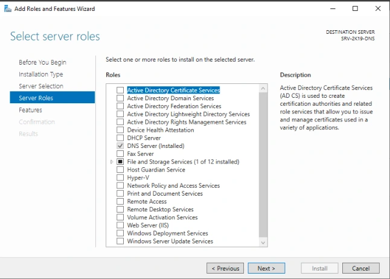
- Tester la résolution depuis W19-DNS.
- Pouvez-vous résoudre les noms DNS publics ? □ Non
- Pouvez-vous résoudre les noms DNS de centre de formation École ? (ad.campus-formation.test) □ Non
- Est-ce normal ? Oui, car il n’y a pas de redirecteur.
- Affichez les informations contenues dans le cache du service DNS
- Vider le cache DNS du serveur.
- Configurer les redirecteurs
- Vers les serveurs DNS de l’centre de formation, dont est cliente votre machine physique. o Pouvez-vous résoudre les noms DNS publics ? □ Oui
- Pouvez-vous résoudre les noms DNS de centre de formation École ? □ Oui
- Afficher les informations contenues dans le cache du service DNS.
- Que pouvez-vous en déduire ? Le serveur DNS résolveur renseigne le cache DNS au fur et à mesure des demandes de l’utilisateur. Paramétrages clients
- Configurer le serveur DHCP afin qu’il fasse appel au serveur DNS de votre infrastructure.
- Configurer automatiquement les clients afin qu’ils fassent appel au serveur DNS de votre infrastructure.

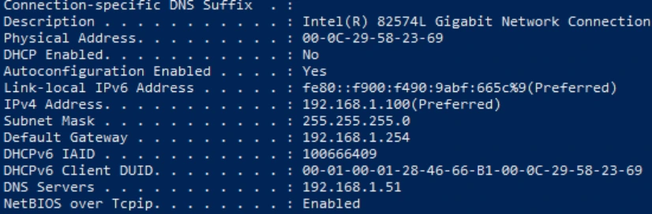
- Pouvez-vous résoudre les noms DNS publics ? □ Oui
- Pouvez-vous résoudre les noms DNS de centre de formation École ? □ Oui

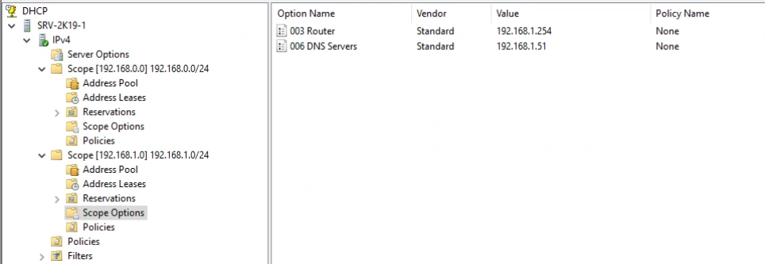
Référence du document : 1CKoJTNvqPRBNGHG3yOos6RoNxANpvh8M · SHA-256 23ca5c52dbd3a231…
Correction · Solution du TP 2 - DNS hébergeur · 6 pages transcrites
Correction originale : à consulter après avoir tenté l’exercice.
DNS hébergeur
TP du Module 06 – Le service DNS
Avant de démarrer ce TP, il convient d’avoir suivi les vidéos du module 6 et d’avoir réalisé le précédent TP.
Durée estimée
1 à 2 heures
Énoncé
Prérequis :
- Avoir réalisé le TP précédent du Module 05.
- Mettre en place la VM SRV-2K19-DNS-TP14.ova mise à disposition.
- Identifiant : Administrator - Mot de passe : [valeur fournie par le formateur]
Configuration du serveur DNS hébergeur
- Installez le service DNS sur la machine virtuelle ou est hébergé le service DHCP.
- Sur ce serveur, créez les zones pour les besoins suivants :
- Résolution directe pour un domaine infraXX.net (ou XX = vos initiales).
- Résolution inverse pour votre réseau VmNet10. o Création de l’ensemble des enregistrements permettant la résolution des
noms et adresses IP de vos serveurs.
- Testez et validez le bon fonctionnement depuis votre serveur :
- nslookup -q=soa <votre domaine> o nslookup -q=ns <votre domaine>
Paramétrage du client
- Revoir la configuration automatique des paramètres DNS sur les clients :
- Configurez le 2e serveur DNS comme serveur DNS préféré.
- Configurer le suffixe DNS relatif à votre domaine.

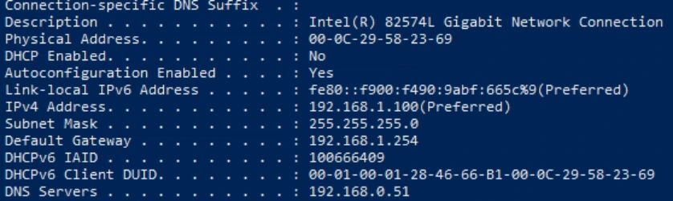
- Testez et validez le bon fonctionnement de la résolution de vos domaines depuis le poste client.
- En utilisant le FQDN
- En utilisant le nom d’hôte uniquement

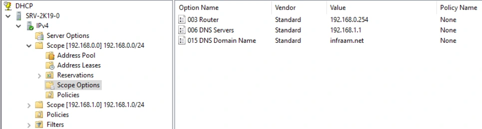
Chaîne de résolution :
- Configurez le 2e serveur DNS pour faire appel uniquement à votre 1er serveur DNS pour la résolution des noms DNS extérieurs.
- Configurez votre 2e serveur DNS pour permettre la résolution du domaine DNS mis à disposition «infraXX.net » .

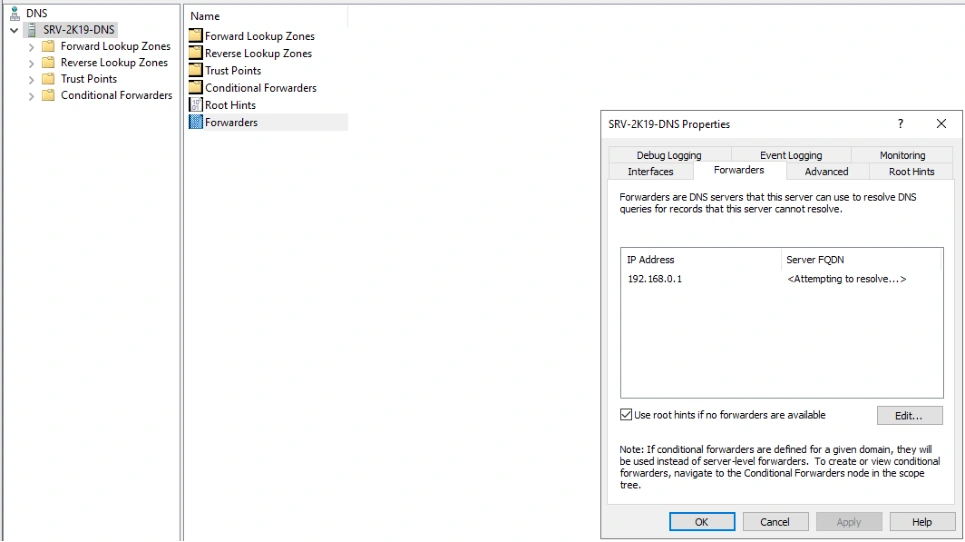
- Testez et validez le bon fonctionnement de la résolution depuis le client.
- Vers vos domaines DNS ? □ Oui
- Vers les domaines DNS fournis ? □ Oui
- Vers les domaines DNS publics ? □ Oui
Référence du document : 10nLXlOI84_vLn6rvh0KDns-q7pdGvOpB · SHA-256 289193b6fe1553cc…
Correction · Solution du TP 3 - DNS hébergeur et redondance · 11 pages transcrites
Correction originale : à consulter après avoir tenté l’exercice.
DNS hébergeur et redondance
TP du Module 06 – Le service DNS
Avant de démarrer ce TP, il convient d’avoir suivi les vidéos du module 6 et réalisé le précédent TP.
Durée estimée
1 à 2 heures
Solution
Prérequis :
- Avoir réalisé le TP précédent du module 05.
- Un serveur DNS sera à mettre en place dans le réseau 192.168.0.0/24 ainsi que dans le réseau 192.168.1.0/24.
- Le routage entre les deux réseaux doit être fonctionnel.
Enregistrements dynamiques :
- Sur le serveur DNS hébergeur, configurez les zones principales pour permettre l’enregistrement dynamique des clients.
Il faut faire un clic droit sur la zone DNS, puis dans l’onglet Général, sélectionner Nonsecure and Secure dans le champ Dynamic Update.
- Sur les postes clients, configurez le suffixe DNS principal.
Il faut aller dans les propriétés de la carte réseau, puis cliquer sur Advanced, puis sur l’onglet DNS.
- Vérifiez la présence des nouveaux enregistrements DNS :
- avec la console DNS sur le serveur DNS hébergeur
Voici le détail des fichiers de zone mis à jour par le serveur DHCP et le détail de la configuration du serveur DHCP.

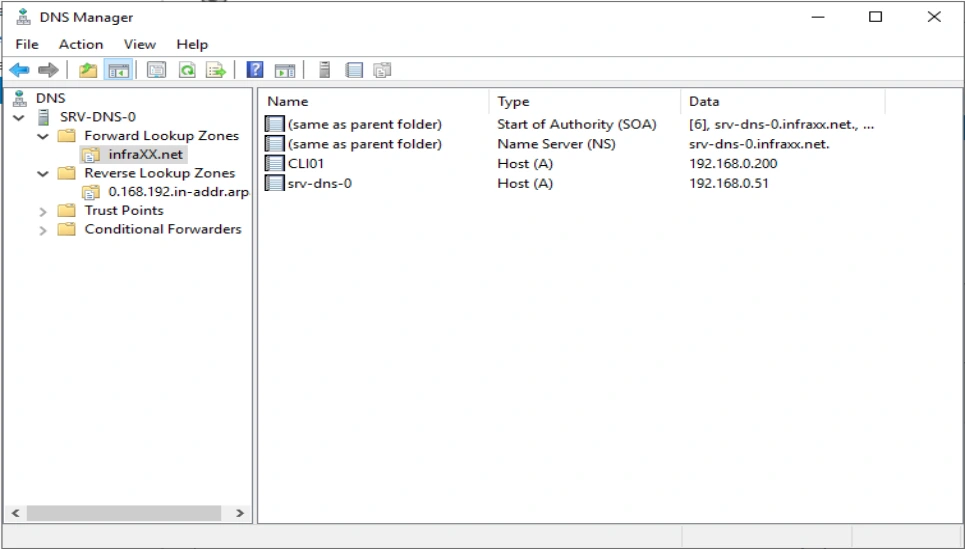
Il faut aller dans les propriétés du serveur DHCP en cliquant sur IPV4, puis sur l’onglet DNS et activer les cases suivantes.
- Avec la commande nslookup
Avec la configuration du suffixe DNS configuré
Sans la configuration du suffixe, il faut ajouter le nom de domaine.

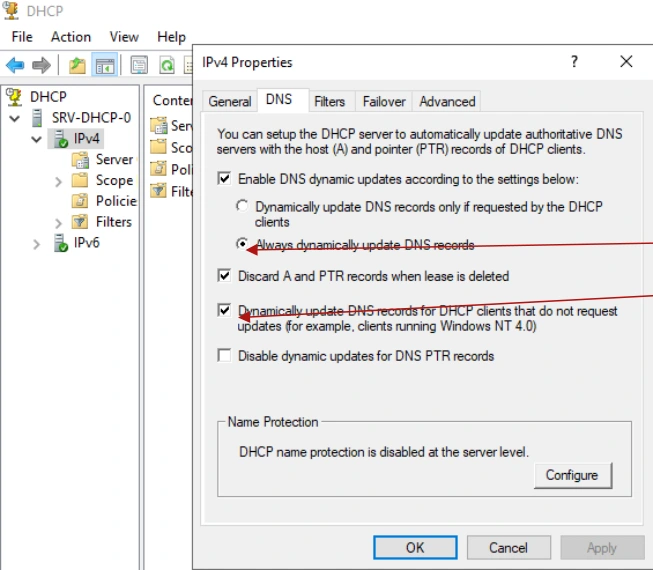
- Quels types d’enregistrements sont créés ? Des enregistrements de type A et TXT.
Mise en œuvre de la redondance DNS : Vérifiez au préalable que le routage est opérationnel entre les deux réseaux. Vous réaliserez un schéma des infrastructures.
- Sur le serveur DNS hébergeur du réseau 192.168.0.0/24 :
- Configurez les zones principales, et le transfert de zone pour permettre le
transfert à partir du serveur DNS hébergeur du réseau 192.168.1.0/24. Il faut faire un clic droit sur la zone DNS puis dans l’onglet Zone Transfers, il faut ajouter l’IP du serveur distant.
- Sur le serveur DNS du réseau 192.168.1.0/24 :
- Configurez les zones secondaires et le transfert de zone pour permettre le
transfert à partir du serveur DNS du réseau 192.168.0.0/24.
On crée une nouvelle zone sur le serveur DNS, en type secondary, puis on spécifie le nom de la zone

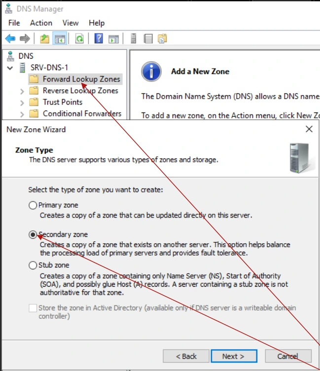
On indique ensuite l’IP du serveur DNS Maitre.
- Vérifiez que le transfert est fonctionnel en créant un nouvel enregistrement dans la zone principale :
Ici on crée l’enregistrement sur le serveur maître.
- Le nouvel enregistrement est-il créé ? □ Oui
- Sinon, consultez le journal d’évènements DNS, vérifiez les connexions…
Validation de la redondance DNS
- Paramétrez les clients de chacune des infrastructures :
- Pour les clients du réseau 192.168.0.0/24 :
- DNS préféré = Serveur DNS hébergeur du réseau d’appartenance.
- DNS auxiliaire = Serveur DNS hébergeur du second réseau.
- Pouvez-vous configurer les suffixes DNS de deux domaines sur tous les
clients ?
□ OUI- Comment procéder ? Une option DHCP est disponible.
- Arrêtez le service DNS hébergeur du 1er réseau et testez la résolution depuis l’infrastructure du 2e réseau.
- Peut-on résoudre les noms du 1er Réseau ? □ Oui
- Peut-on résoudre les noms du 2e Réseau ?
□ Oui- Peut-on résoudre les noms DNS publics ? □ Oui, à condition d’indiquer l’IP du serveur DNS de l’centre de formation comme redirecteur non conditionnel
- Redémarrez le service DNS hébergeur du 1er réseau.
- Peut-on résoudre les noms du 1er Réseau ? □ Oui
- Peut-on résoudre les noms du 2e réseau ? □ Oui
- Peut-on résoudre les noms DNS publics ? □ Oui, à condition d’indiquer l’IP du serveur DNS de l’centre de formation comme redirecteur non conditionnel
- Vous réaliserez un schéma montrant les chaînes de résolutions DNS.
Référence du document : 1dq3eJVa646vscYkKDxz9dHIJm9xIC4hY · SHA-256 1b6e674b68df5266…
Correction · Solution du TP 4 - DNS délégations et redirections · 7 pages transcrites
Correction originale : à consulter après avoir tenté l’exercice.
DNS délégations et redirections
TP du Module 06 – Le service DNS
Avant de démarrer ce TP, il convient d’avoir suivi les vidéos du module 6 et réalisé le précédent TP.
Durée estimée
2 à 3 heures
Solution
Prérequis :
- Avoir réalisé le TP précédent du Module 05.
L’objectif est de mettre en place une hiérarchie DNS :
- Un domaine de 2e niveau : formation.test

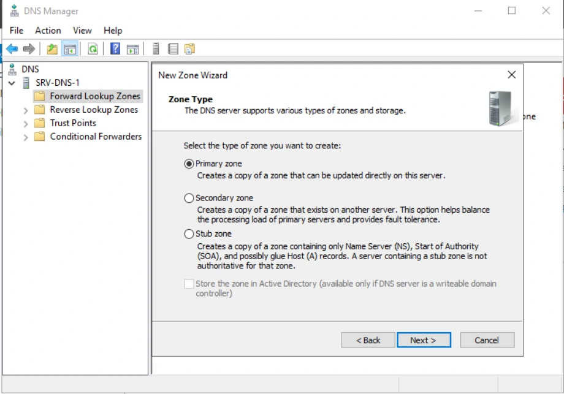
On crée une nouvelle zone principale pour le nom de domaine formation.test
- Un domaine de 3e niveau : nantes.formation.test OU rennes.formation.test OU niort.formation.test
- Neuf domaines de 4e niveau : res.nantes.formation.test OU res.rennes.formation.test …
Faites un clic droit sur la zone formation.test puis sur Nouvelle délégations.

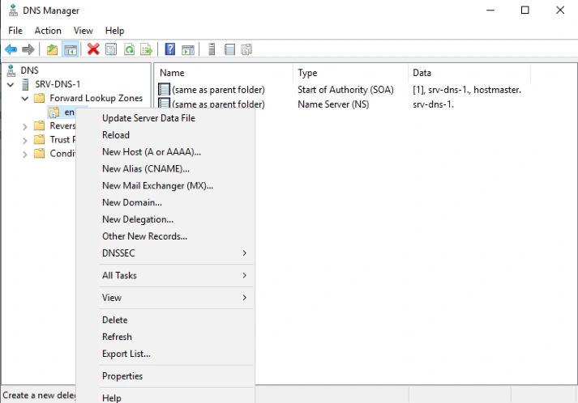
Sur le second serveur DNS, créer la zone formation.test puis ajouter le domaine NANTES
Créer des enregistrements de TEST. Tester la résolution de nom en envoyant la requête sur l’un ou l’autre des deux serveur DNS.
Gestion des domaines :
- Chacun des serveurs DNS prend en charge un des domaines de la hiérarchie.
- Le domaine est géré sur le 1er serveur DNS et la redondance est assurée.
- Vous reportez les informations relatives au domaine (nom du domaine,
gestionnaire du domaine, adresses IP des serveurs DNS).
- Validez le bon fonctionnement de la résolution et de la redondance sur le domaine pris en charge avant de passer à l’étape suivante.
Résolution des domaines de l’ensemble de la hiérarchie
- Paramétrez chacun des serveurs pour permettre la résolution de l’ensemble des domaines de la hiérarchie (domaine parent, enfant...)
- Vérifiez le bon fonctionnement de la résolution sur l’ensemble de la hiérarchie.
- Vous réaliserez un schéma montrant les chaînes de résolutions DNS.
Référence du document : 1fVa7mIvVUU_DhhEQYfXQoSkUSwdP5Od2 · SHA-256 3f5e84ae83ec103b…
Complément IA / externe au cours — fiche pédagogique du portail
Cette fiche contient une reformulation et des aides d’apprentissage rédigées par IA. Elle est distincte de la transcription des documents du Drive et ne la remplace pas. Les schémas de synthèse de cette fiche sont des illustrations IA / externes au cours, sauf les captures explicitement attribuées à un document source.
Un poste peut interroger un serveur qui fait autorité sur sa zone, un résolveur qui cherche la réponse ailleurs, ou le même serveur pour ces deux fonctions. Les quatre TP suivent cette progression et vérifient séparément la résolution, l’hébergement, la redondance et la délégation.
Objectifs¶
- Distinguer la résolution locale, récursive et itérative.
- Reconnaître la fonction des zones, des enregistrements et des redirecteurs.
- Créer et vérifier des zones directes, inverses et secondaires dans Windows Server.
- Tester le nom court, le FQDN, le transfert et la résolution entre domaines délégués.
1. Suivre la requête du poste à la réponse¶
Le client Windows peut obtenir une réponse de son cache, d’une entrée du fichier hosts ou d’un serveur DNS configuré. Le fichier C:\Windows\System32\drivers\etc\hosts associe une adresse à un ou plusieurs noms séparés par des espaces. Le support montre un séparateur virgule à un endroit. La syntaxe attend des espaces ou tabulations entre les champs.
Un FQDN situe l’hôte dans la hiérarchie DNS. Dans srvfic.masociete.lcl., srvfic est le nom d’hôte, masociete.lcl son domaine et le point final désigne la racine. Un nom court peut dépendre d’un suffixe principal, d’un suffixe propre à la connexion ou d’une liste de recherche. Vérifier le nom demandé avant de modifier la zone.
| Étape | Contrôle |
|---|---|
| Identifier le DNS interrogé | Lire les serveurs indiqués par le poste et viser un serveur précis pour comparer. |
| Repérer un cache | Distinguer le cache du client et celui du serveur. Chacun peut retenir des réponses positives ou négatives. |
| Comparer nom court et FQDN | Le nom complet peut fonctionner malgré une configuration de suffixe incomplète. |
| Tester le nom inverse | Interroger le PTR et identifier la zone inverse qui le contient. |
ipconfig /all
ipconfig /displaydns
nslookup srvfic.masociete.lcl.
nslookup -type=soa masociete.lcl.
nslookup -type=ns masociete.lcl.
La commande ipconfig /flushdns agit sur le cache local du poste. Pour comparer des requêtes non mémorisées sur un résolveur du TP, vider aussi son cache au moment prévu avec le Gestionnaire DNS.
2. Distinguer résolution et autorité¶
Une demande récursive attend une réponse finale du résolveur. Une requête itérative peut recevoir un renvoi vers un autre serveur. La hiérarchie DNS mène de la racine au domaine de premier niveau, puis à la zone qui contient la réponse. La zone primaire porte les données de référence. La secondaire reçoit une copie et répond également avec autorité. La copie reste en lecture seule pour l’administration ordinaire.
Illustration IA / externe au cours — les chemins possibles d’une requête.
Un redirecteur général traite les noms qui nécessitent une recherche externe. Un redirecteur conditionnel n’est utilisé que pour le suffixe ciblé. Une délégation se configure dans une zone parente et annonce les serveurs qui font autorité pour la zone enfant. En l’absence de redirecteur, la résolution publique peut réussir via les indications de racine si la récursion est autorisée et les serveurs atteignables. Le corrigé du TP 1 montre un résultat négatif avant la redirection dans sa maquette. Redirection et indications de racine Windows DNS
3. Lire une zone et ses enregistrements¶
| Type | Donnée représentée |
|---|---|
| SOA | Autorité administrative, numéro de série et temporisations de la zone. |
| NS | Nom d’un serveur qui fait autorité. |
| A / AAAA | Adresse IPv4 ou IPv6 d’un hôte. |
| CNAME | Alias vers un nom canonique. |
| MX | Serveur de messagerie et priorité. |
| SRV | Localisation d’un service selon priorité, poids, port et cible. |
| PTR | Nom associé à une adresse, dans la zone inverse. |
Le Gestionnaire DNS permet de repérer les zones directes et inverses, les indications de racine, les redirecteurs et les points d’approbation. Une zone directe héberge les noms. Une zone inverse organise les adresses pour retrouver les noms. Le support présente les zones en fichier sous %windir%\system32\dns. Une zone intégrée à AD utilise une réplication différente. Gérer les zones DNS Windows Server
Une mise à jour dynamique ajoute ou modifie les données de la zone primaire suivant ses droits et sa configuration. Un transfert recopie la zone vers un serveur secondaire autorisé. Comparer le numéro de série SOA, les hôtes autorisés et le journal DNS. Les transferts complets AXFR et incrémentaux IXFR répondent à des besoins différents. Un secondaire doit accéder au primaire et peut utiliser une notification pour accélérer la vérification du numéro de série.
4. TP guidé — DNS résolveur¶
Durée du support. Une à deux heures. Reprendre le réseau et le DHCP du module 5. Créer W19-DNS sous Windows Server 2019 Standard et lui permettre de communiquer avec les autres machines de la maquette.
- Installer le rôle DNS. Configurer
W19-DNSpour interroger son propre service, puis ouvrir le Gestionnaire DNS et identifier les options de recherche. - Depuis le serveur, interroger un nom public et le nom privé
ad.campus-formation.testdu scénario neutralisé. Noter l’adresse du DNS interrogé et le résultat. Le corrigé obtient deux échecs avant la redirection. Vérifier les indications de racine et les possibilités de sortie pour expliquer le résultat dans votre maquette. - Examiner le cache du serveur et le vider. Dans les propriétés DNS, ajouter les redirecteurs du laboratoire indiqués par l’atelier.
- Répéter les deux requêtes et examiner les entrées apparues dans le cache. Le corrigé obtient la résolution publique et privée par les redirecteurs du scénario. La zone privée doit être connue sur le chemin emprunté.
- Dans DHCP, renseigner l’option 006 Serveurs DNS avec le résolveur de l’infrastructure. Renouveler le bail du poste client, vérifier
ipconfig /allet répéter les tests sur les deux catégories de noms.
5. TP guidé — DNS hébergeur¶
Durée du support. Une à deux heures. Préparer la VM fournie dans le scénario SRV-2K19-DNS-TP14.ova et les accès de laboratoire.
- Installer DNS sur le serveur qui héberge DHCP selon l’énoncé. Dans Zones de recherche directes, créer la zone primaire du domaine
infraXX.net, avec les initiales demandées. Dans Zones de recherche inverse, créer la zone du réseau VMNet10. - Ajouter les enregistrements A et PTR des serveurs. Vérifier les réponses A et PTR, ainsi que les SOA et NS de la zone, depuis le serveur.
- Distribuer l’adresse du second DNS comme DNS préféré et le suffixe du domaine pour le client. Dans le scénario, l’option 015 Nom de domaine DNS indique un suffixe de connexion. Renouveler le bail et comparer le FQDN puis le nom court.
- Configurer le second DNS pour transmettre les requêtes extérieures uniquement au premier résolveur. Vérifier le choix de secours par indications de racine si la consigne exige ce chemin unique.
- Tester sur le poste les noms locaux, les domaines fournis et les noms publics. Le même libellé
infraXX.netapparaît pour le domaine créé et un domaine fourni dans le document. Une zone locale faisant autorité répond pour son espace de noms. Si deux espaces sont attendus, clarifier les domaines exacts avant de tester une redirection.
$dnsLabo = Read-Host "Adresse du serveur DNS de laboratoire"
$zoneLabo = Read-Host "Nom de la zone de laboratoire"
Resolve-DnsName -Name $zoneLabo -Type SOA -Server $dnsLabo -DnsOnly
Resolve-DnsName -Name $zoneLabo -Type NS -Server $dnsLabo -DnsOnly
6. TP guidé — DNS hébergeur et redondance¶
Durée du support. Une à deux heures. Utiliser un DNS sur 192.168.0.0/24 et un autre sur 192.168.1.0/24. Vérifier le routage et identifier les adresses des serveurs avant la configuration.
A. Prouver l’enregistrement dynamique¶
- Dans les propriétés des zones principales, activer le mode de mise à jour prévu pour la maquette. La solution montre Non sécurisé et sécurisé. Ce réglage autorise une portée plus large que le mode sécurisé d’une zone intégrée à AD.
- Configurer le suffixe principal du poste et les options DNS de DHCP indiquées. La démonstration propose
ipconfig /registerdnssur le client. Vérifier ensuite le résultat dans la console et avec une requête ciblée. - Relever les types réellement créés. Le corrigé mentionne A et TXT. Les enregistrements observés dépendent du service qui effectue la mise à jour et des réglages direct et inverse. Vérifier séparément les A et les PTR attendus dans votre maquette.
B. Prouver le transfert et le basculement¶
- Sur le primaire, autoriser le transfert vers l’adresse du second serveur dans Transferts de zone. Sur le secondaire, créer chaque zone secondaire avec le même nom et préciser l’adresse du primaire.
- Interroger chaque serveur et comparer le numéro de série SOA. Créer un enregistrement témoin sur le primaire, puis vérifier qu’il apparaît sur le secondaire. En cas d’échec, vérifier le journal DNS, l’autorisation de transfert et la connectivité avant d’ajouter une seconde fois l’enregistrement.
- Configurer le DNS préféré et l’auxiliaire des postes selon le réseau du TP. Pour deux suffixes, utiliser une liste de recherche adaptée à la version du poste et de sa stratégie. L’option DHCP 015 transmet un seul nom de domaine et ne suffit pas à prouver la présence d’une liste.
- Arrêter le service du premier DNS dans le laboratoire. Depuis le second réseau, tester des noms de chaque réseau et un nom public, en évitant de valider sur une réponse déjà en cache. Le corrigé prévoit un redirecteur général sur le serveur encore disponible pour la résolution publique.
- Redémarrer le service du premier DNS et répéter les essais. Documenter le DNS interrogé, le numéro de série, la réponse et le chemin de chaque test. Dessiner les deux réseaux et leurs chaînes de résolution.
7. TP guidé — Délégations et redirections¶
Durée du support. Deux à trois heures. L’équipe répartit formation.test, les trois branches Nantes, Rennes, Niort et les neuf espaces de quatrième niveau.
- Relever pour chaque domaine le gestionnaire, le primaire, le secondaire et leurs adresses. Créer les zones attendues et des enregistrements de test. Vérifier chaque zone localement avant de chercher à traverser la hiérarchie.
- Dans la zone parente, créer une Nouvelle délégation pour la zone enfant. Renseigner ses serveurs faisant autorité et l’adresse nécessaire pour les joindre lorsque leur nom dépend de la zone déléguée.
- Sur les serveurs responsables de la branche, vérifier la zone enfant et la redondance par le transfert autorisé. Le corrigé parle de créer la zone parente puis d’ajouter le sous-domaine sur le second serveur. Pour démontrer une délégation, contrôler que le second serveur répond bien avec autorité pour la zone enfant attendue.
- Relier les autres branches avec le chemin de résolution convenu. Un redirecteur conditionnel envoie des requêtes d’un suffixe vers un serveur désigné. La délégation annonce l’autorité dans la zone parente. Tester les deux mécanismes séparément lorsqu’ils sont tous deux configurés.
- Interroger explicitement différents DNS pour un nom du parent, de l’enfant et d’une branche voisine. Comparer la résolution normale depuis le client et le résultat ciblé sur l’autorité. Dessiner les zones, les NS, la redondance et les liens de redirection.
À retenir¶
Le cache, le serveur interrogé et le nom exact font partie du diagnostic. Le transfert réplique une zone vers un secondaire. La délégation donne une autorité à l’enfant. Pour vérifier le TP, relever les réponses de chaque serveur et les conditions du chemin utilisé.
Mini-quiz — 5 questions¶
- Un FQDN fonctionne et le nom court échoue. Quel paramètre vérifier ?
- Que prouve un numéro de série SOA identique sur deux serveurs ?
- Pourquoi un nom public peut-il être résolu sans redirecteur ?
- Comment prouver qu’un transfert continue après création d’un enregistrement ?
- Où configure-t-on la délégation et que doit fournir le serveur enfant ?
Réponses commentées
- Les suffixes du poste et leur ordre de recherche, puis le DNS réellement utilisé.
- Les deux serveurs annoncent la même version de la zone. Vérifier aussi l’enregistrement témoin pour établir le résultat attendu.
- Le résolveur peut utiliser ses indications de racine si la récursion et le réseau le permettent.
- Ajouter un enregistrement au primaire, comparer les SOA puis interroger directement le secondaire pour ce nom.
- Dans la zone parente. Le serveur enfant doit héberger la zone et répondre avec autorité.
Pour pratiquer et réviser¶
- Les quatre énoncés et leurs corrections
- Démonstrations du Gestionnaire DNS
- Fiche de révision
- Kahoot existant
- Sommaire de Services réseau en environnement Microsoft
Provenance pédagogique¶
Le support M06, les quatre fiches de démonstration et les quatre paires d’énoncé et de solution fondent la leçon et les procédures. Les exemples neutralisés, le schéma et les contrôles détaillent la démarche de laboratoire.
M06 — Le service DNS
20 questions
Teste tes connaissances sur ce module.